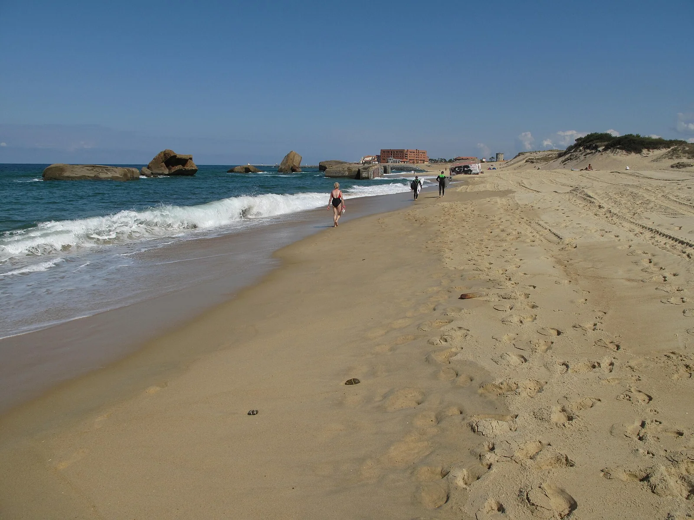

La Piste — Capbreton
Landes, France · surf

Spot puissant bordé par la forêt, l'un des beach breaks les plus creux des Landes. Tubes rapides quand la houle entre, très prisé des surfeurs confirmés.
- Lieu
- Landes, France
- Niveau
- Expert
- Activités
- surf
- Type d'eau
- Mer / océan
- Coordonnées
- 43.64, -1.45 (position approximative du secteur)
Dangers à connaître
- Vagues creuses et puissantes.
- Baïnes et courants forts.
- Bancs de sable changeants.
Le conseil d'Ocean Buddy
Spot sérieux ! Privilégie une houle modérée et repère les courants avant d'entrer.
Ouvrir dans Ocean Buddy Télécharger sur l'App Store
Source : Description historique Ocean Buddy · vérification externe en attente.